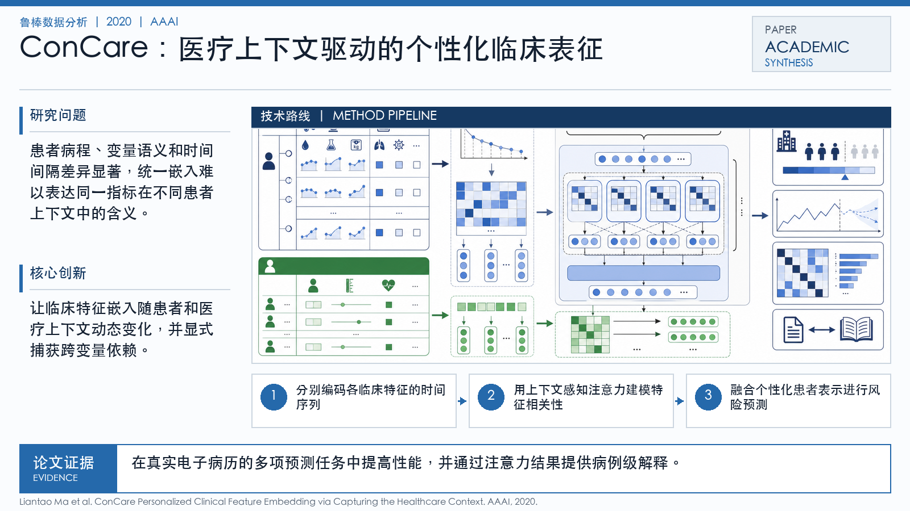

Problem
解决的问题
患者病程、变量语义和时间间隔差异显著，统一嵌入难以表达同一指标在不同患者上下文中的含义。
Robust Data Analytics · 2020 · AAAI
ConCare Personalized Clinical Feature Embedding via Capturing the Healthcare Context
Problem
患者病程、变量语义和时间间隔差异显著，统一嵌入难以表达同一指标在不同患者上下文中的含义。
Value
在真实电子病历的多项预测任务中提高性能，并通过注意力结果提供病例级解释。
Paper-grounded Academic Summary
该代表页依据原文摘要、贡献段与方法图注生成。方法视觉由 ImageGen 按论文证据逐篇绘制，中文研究问题、技术路线、创新点与实验结论采用确定性排版，以保证内容与字符准确。
打开原文 PDF
Technical Route
Innovation